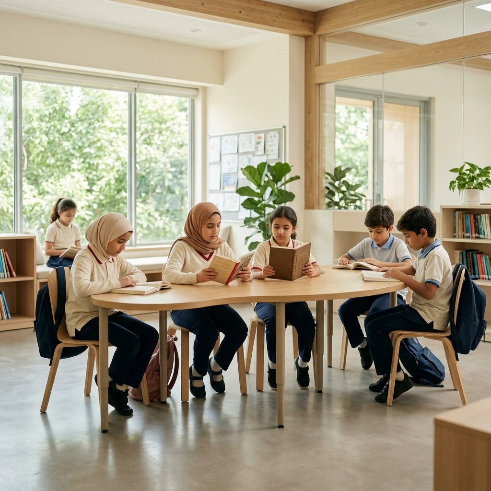
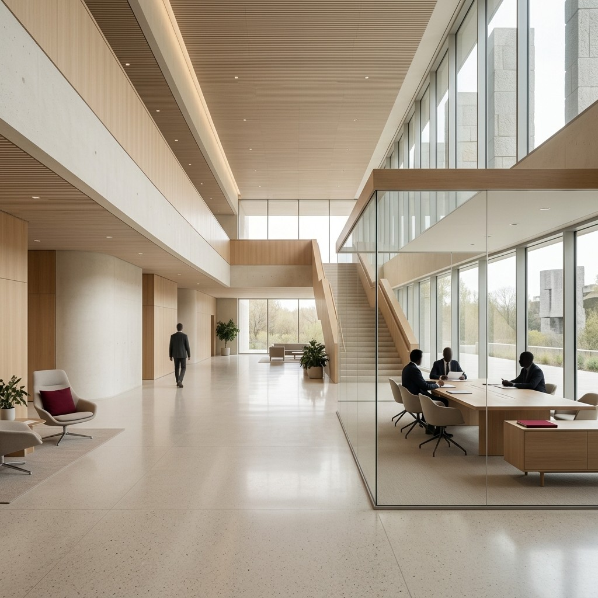

بَيَان لكلّ جمهور
لكلّ شريكٍ في العملية التعليمية حاجةٌ مختلفة — وبَيَان تستجيب لكلٍّ منها برسالةٍ وأدواتٍ مخصّصة.

تميُّزٌ ونتائج في آنٍ واحد
تبحث المدرسة الخاصة عمّا يميّزها ويرفع نتائج طلبتها معًا — وضعف القرائية أحد أكثر ما يقلق أولياء الأمور.
منهجٌ متدرّج جاهز يوفّر عناء التأليف وضبط المستويات.
يُدمَج مع منهجك القائم لا ليزاحمه.
لوحات متابعة تُظهر تقدّم كلّ صفٍّ وطالب وتجعل القرائية ميزةً تسويقية.

حلٌّ على مستوى المنظومة
يمثّل ضعف القرائية تحدّيًا على مستوى النظام التعليمي بأكمله، يصعب معالجته بحلولٍ متفرّقة أو محتوًى غير متّسق. تقدّم بَيَان حلًّا منهجيًّا قابلًا للتوسّع، يُواءَم مع المراحل الوطنية، ويربط القرائية بالهوية والحضارة والمعرفة والمرجعية الإسلامية — مع لوحاتٍ تجميعية ومعايير موحّدة لقياس القرائية على نطاقٍ واسع.
يرفع عنك عبء الإعداد
يقضي معلّم العربية وقتًا طويلًا في إعداد المادة وضبط مستواها وتصحيحها. تخفّف بَيَان عنك هذا العبء: محتوًى جاهزٌ مبنيٌّ على أسسٍ علمية، بناءٌ واضح للدرس من النصّ إلى الأنشطة، تصحيحٌ تلقائيّ للاختبارات البعدية، وأدوات تكليفٍ ومتابعةٍ مرنة — فيتفرّغ المعلّم لما يُجيده: التدريس وتوجيه الفهم.

رحلةٌ بمستواك تمامًا
يُحبَط الطالب حين يُواجَه بنصٍّ أعلى من مستواه، ويملّ حين يكون أدنى منه، وينفصل عن القراءة حين لا يجد فيها ما يمسّ عالمه. تقدّم لك بَيَان رحلةً قرائيةً بمستواك تمامًا، ومحتوًى غنيًّا يربطك بهويّتك وحضارتك وعالمك المعرفي، واقترانُ كلّ موضوعٍ بشخصيةٍ مُلهمة يجعل التعلّم أقرب إلى القصة.
أيّ شريكٍ أنت؟ لدينا حلٌّ لك
اطلب عرضًا تعريفيًّا فيتواصل الفريق برسالةٍ مخصّصة لجهتك.